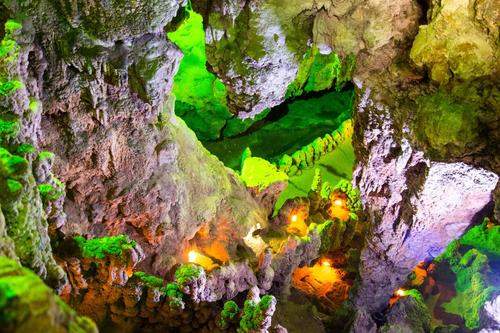

龙宫位于贵州省安顺市西秀区境内，距黄果树景区35千米，距安顺市城区27千米，距贵阳116千米。
龙宫属亚热带季风湿润气候，年平均气温14℃，最热7月平均21.9℃，气候温和，夏无酷暑，冬无严寒，适宜旅游，夏季更是避暑休闲的旅游胜地。
龙宫景区集溶洞、峡谷、瀑布、峰林、绝壁、溪河、石林、漏斗、暗河等多种喀斯特地质地貌景观于一体，是喀斯特地貌形态展示最为全面、集中的景区，被誉为“天下喀斯特，尽在龙宫”。
黔地无闲草,龙宫多灵药。龙宫植物亦是丰富，随处可以寻觅到贵州的天然中草药植物，数量达1200余种之多，如银杏、木槿、十大功劳、高丽参、党参、半夏、金银花等，俨然是一座中草药宝库，令人稀奇。
龙宫景区拥有两项大世界吉尼斯之最——最大、最多的水旱溶洞群——“龙宫溶洞群”、天然辐射率最低的地方——“贵州龙宫风景名胜区”，拥有世界纪录认证世界最大的植物汉字景观——“龙”字田等瑰丽奇特的景观。
